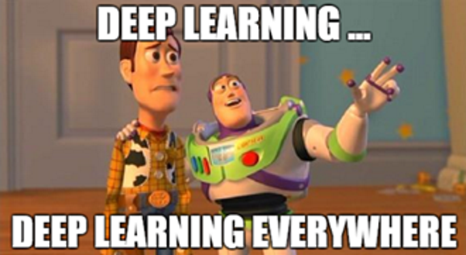

|
|
Can a contact center be a "deep learner"?
Published in the (now extinct) Altitude Software's blog, 2018 |
|
|
|
Can a contact center be a "deep learner"?
Published in the (now extinct) Altitude Software's blog, 2018 |
|
Once upon a time there was a 1400-year-old game called “Chess” and the world chess champion, Garry Kasparov, losing against an IBM supercomputer called “Deep Blue”.
This was in 1997. Since then the artificial intelligence (AI) love with chess has never vanished, with the machines becoming more skillful and playing tournaments between themselves.
In November 2017 chess.com held an open tournament of the ten strongest chess engines. A pretty good engine with a weird name, “Stockfish”, won and became the new world chess champion. According to Wikipedia, “since 2013 Stockfish has been developed using a distributed framework named Fishtest, where volunteers are able to donate CPU time for testing improvements to the program” and “as of June 2017, the framework has used a total of more than 745 years of CPU time to play more than 485 million chess games”.
That’s impressive, but about 1 month later DeepMind’s AlphaZero, with a deep reinforcement learning approach, decided to go for the title – without any prior knowledge of chess, except for the rules, and training for just 9 hours, reaching the Stockfish level at the 4th. And it won, becoming the greatest player since the game was invented.
“Ok, congratulations, but what does chess have to do with contact centers?”
The point here is not the chess game, but the new machine learning algorithms used to learn and play the game. They are more generic so they can be applied to many other domains, including ours (contect centers). Theoretically, at least.
AlphaZero has learned to master the game “from scratch”, by playing against itself numerous times on powerful hardware. Before that, the first great success of DeepMind, a British company now owned by Google, was creating algorithms that learned to play several Atari games without any specific knowledge, just by processing sequences of screens. Last year they’ve also created a program capable of teaching simulated humanoid dolls to run, jump and avoid obstacles without prior input. That means nobody tells the machine what running, jumping or balance is: it discovers all these complex mechanisms by itself, through trial and error.
DeepMind, as the name suggests, specialize in deep learning techniques. Deep learning is a machine learning method and we call it “deep” because it involves neural networks structured by a cascade of layers. Detailing it further is out of the scope of this post, but let’s say that, in the kingdom of AI hypes, this is the king right now.
Deep learning was not for everybody until a few years ago, when neural networks, taking advantage of the increasing computer power and huge amounts of available data to train, finally started to shine. This was maybe in 2012, when Google announced that it had built a deep learning system, called Google Brain, which was capable of identifying cats in YouTube.
Some say that deep learning is not the future of AI because it lacks a formal theory. Maybe so, but it is the present. Because it works. In 5 years deep learning is already part of our lives, being used in Google searches, Google Translate, Google Play, YouTube or Amazon recommendations, Facebook facial recognition and targeted advertising, Apple Siri, Microsoft Cortana, Snapchat, LinkedIn, Instagram and many other popular applications.
Today we have optimized, scalable, open source code libraries like Google Tensorflow, Microsoft CNTK, PyTorch or Theano that allow us to develop complex neural networks or other machine learning models much faster. Of course, collecting, labelling and processing data for the training, tuning the networks or using them as part of more complex machine learning algorithms, like the deep reinforcement learning algorithms used by DeepMind, is still a hard job, but we can start far away from zero.
There is also the cost factor. Neural networks are hungry for big data and fast hardware, which can be very expensive, but that is being seen as an opportunity by the big players. MlaaS, or Machine Learning as a Service, is a growing business and it opens doors for small companies to include AI in their products, eliminating the cost of usually expensive and demanding hardware. Amazon Machine Learning, Microsoft Azure Machine Learning, and Google Cloud AI are three leading cloud MLaaS services, offering platforms in the cloud intended to handle nearly all matters connected with infrastructure.
Summing up, the conditions for several companies to benefit from deep learning are real. It’s not “plug-and-play”, it carries the risks of any emerging, not-much-tested, technology, and demands some R&D investment, but the recent past is telling us that it can make a difference. Focusing on contact centers (finally) here are 7 possible deep learning applications:
A new generation of scripts could be able to adapt its content for the more adequate conversation to meet the business goals, based on the contact history of interactions with the contact center, its profile or other profiles with similar patterns.
Assistance in real time is also a possibility. Imagine scripts with an artificial assistant incorporated to help the agent during interactions with customers. The artificial assistant analyses the conversation, thanks to speech recognition and natural language understanding algorithms, offering real-time reply suggestions to the agent.
It can even count with emotions. Deep learning is already being used for sentiment analysis. Tracking the emotional state on the other end of the line can give useful hints to the agent, for example, during outbound sales calls or inbound calls from a suicide hotline. The detected emotions can then be registered in the contact profile for more personalized interactions.
Customers like when a company values their time. We don't need many statistics to know that, as customers, it is annoying to have a call routed to the wrong department and be forced to give the same information over and over to finally reach the agent that can handle our case. Predicting why the customer is calling (based on the customer past interactions, other customers with similar interactions and every possible relevant data that can be related) can help. Based on prediction the system can route the interaction to the best agent, additionally giving in advance information to the agent about the possible causes of the call.
Predictive dialers have been around since the 80s. Their job is to maximize agent occupation by dialing the right number of calls at the right time. Typically using call metrics and statistical analysis, they predict, among other things, when the agents will be available to accept the next call, how long will be the dialing time and the probability of a call being answered.
“Trigger the right number of calls at the right time…” sounds like a game, a complex game with many variables involved, that can probably be mastered by deep reinforcement learning algorithms.
We’ve talked about personalizing the experience for the customers, but how about personalizing the experience for the agents?
As data can be gathered from customers, it can also be collected from agents. By building the profile of each worker in a contact center, according to known data or extracting information from the agent behavior and results during work, a deep learning system can try to predict what motivates an agent and establish personal, tailored goals and rewards for each individual in order to improve his performance according to his unique characteristics. The same can be applied to teams.
Some people prefer to answer phone calls at lunch time only, while others don’t like their meal to be interrupted. Some prefer to be contacted in the morning, others after working hours. Some will definitely not answer during a soccer game. In short, people are complicated.
Predicting with good accuracy the right time and the right person to contact will naturally improve the success rate of the interactions. If trained with enough customer profiles and past interactions data, a deep learning model will likely do this job, maximizing the success of an outbound campaign.
What's the minimum hardware that we need to meet the contact center goals? What is the maximum number of campaigns, agents and other entities that the existing hardware can handle? Neural networks can be used to estimate these numbers, learning from existing configurations and making predictions about new ones.
What is the ideal number of agents for outbound and inbound, for a given period of the day, a day of the week, a specific month, according to the expected volume of interactions? What is the ideal profile for the agents given the expected type of interactions? Deep learning can make predictions based on experience and offer clues, to supervisors, on how they should dimension the contact center.
Ideas similar to “AI scripts” can apply to chat bots interacting with customers directly, with deep learning used for natural language understanding and interaction personalization.
For now, bots are not at “human level” and are unable to replace human agents in complex interactions. But there are already cases of chat bots being used with success for customer interaction, so, with improved intelligence, they may play an important role by handling simple campaigns or even helping the agents internally (for example a “supervisor bot” designed to assist the agents).

AI is old and none of these ideas are really new. What changes with deep learning is the capacity to correlate tons of data to achieve a better and better accuracy in the course of time, and the software capacity to learn and therefore automatically adapt the product algorithms to each customer environment. It’s a bit like Chess: always the same game but we’ve found a better way to play it.
So yes, probably a contact center can also be a deep learner and play its own “games” in AI-style one day. But if the ending theme is the future, why stop here? Instead of separated AI applications, why not put it all together in a big AI system managing the entire contact center, with centralized algorithms correlating all the available data and taking care of the business goals, optimizing resources, routing interactions, prioritizing outbound contacts and assisting the agents (some of them artificial), all at once? A sort of Hal 9000 for the contact center industry, hopefully with less flaws.